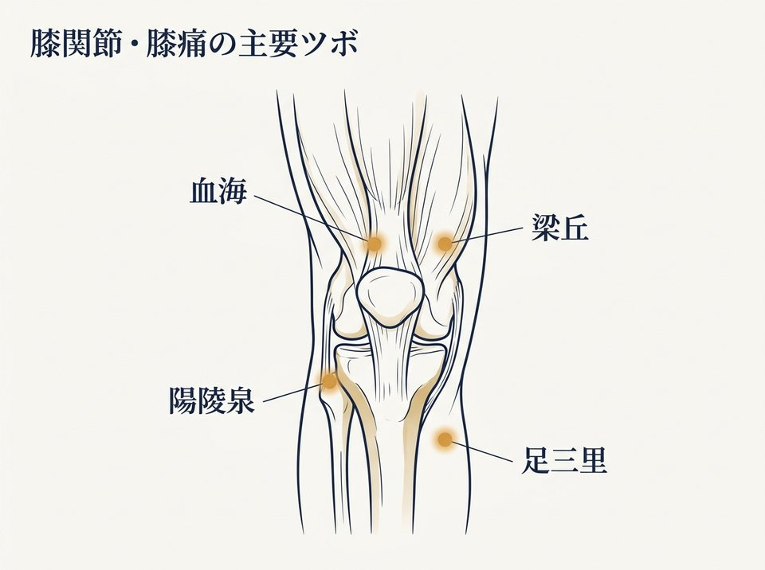

顎性耳鳴りの鍼灸
顎関節や咀嚼筋の緊張が耳周囲の神経に影響する耳鳴り。耳鼻科・歯科の確認を前提に、咀嚼筋を鍼灸で正常化します。


院長YouTube解説・関連動画
顎性耳鳴りは、顎関節と耳の近接から生じる耳鳴りの１種
当院で1番多く見る症状は、耳鳴りと頭鳴りです。
実は、耳鳴りで悩んでいる人の半数の人が食いしばりでも悩んでいます。重症な人ほど噛みしめたり口を開けた時に耳鳴りが強くなったり引いたりします。顎の動きに連動しているのです。
顎の動きに連動している耳鳴りは顎性耳鳴りと言い、顎の改善をしなければ耳鳴りも改善しないという特徴があります。
顎性耳鳴りは、顎関節と耳の近接から生じる耳鳴りの１種です。
顎関節症は顎関節やその周辺の筋肉の異常が原因で耳に異常な音を聞こえさせる症状のことで、その異常な音は耳鳴りとして知られています。
顎性耳鳴りでは、持続的な耳鳴り、耳の閉塞感、耳の圧迫感、顎の異常などの症状を伴います。顎の関節と耳は非常に近い位置にあり、解剖学的にも鍼灸学的にも強い繋がりがあります。
①関節円板と関節窩
顎の関節は関節円板という関節の中にあるクッションがあります。この関節円板がずれてしまうと耳周辺のエリアに影響を与えます。
②咀嚼筋
咀嚼筋という顎周辺の筋肉が、緊張や炎症を起こすと耳に影響が出ます。食いしばったりそれに伴う関節の影響が起こったりすることで耳鳴りを生むのです。
耳鳴りの９つの種類
耳鳴りの症状は非常に複雑で原因、環境、持病、遺伝によって色々な症状があり、改善しやすい、改善しにくい、どのように改善するのかが分かれます。
耳鳴りには多種多様な音がありそれぞれ異なる原因や機序になります。原因は、耳鳴りの音によって分かれます。
1.高音の持続音
特徴・・・ピーという音でテレビのスクリーンが切り替わるときの高音に似ている。
原因・・・高齢者に非常に多く、ライブやコンサートなどの強い音を聞いた後に起こるそる騒音性難聴や音響外傷、鼓膜に対する負荷や聴神経腫瘍といい耳の中の神経に発生する腫瘍でも起こる。
非常に改善しにくいですが改善する人もいます。
2.ホワイトノイズ（ザー音）
特徴・・・ザーという連続的な静電気のような音で、ラジオやテレビのチャンネルが合わないときのノイズに似ている。
原因・・・耳垢のつまり、中耳炎、外耳道の問題。
比較的改善しやすいためあまり心配することはないですが、中耳炎の場合は炎症が止まらない限り音が鳴りやすいため、当院では飲んでいる薬は飲み切るようにアドバイスしています。
3.脈拍と同期する音（ドクンドクン音）
特徴・・・耳の中で心臓の鼓動音が聞こえる。
原因・・・血管異常、動脈瘤高血圧、動脈硬化。疲れやストレスが原因であることも多い。
院長もなったことがあり、ドクンドクンやバクンバクンというような音が聞こえます。鼓膜張筋といい鼓膜の聴力を維持している筋肉が痙攣してしまうと、ボコボコ鼓膜が動いて振動が耳に伝わり音がします。
疲れやストレスが原因であることが多く、目がピクピクすることと一緒のためゆっくりすれば改善しますが、ドクンドクンと脈拍の音が続く人は血管の異常があるため脳や耳のM R Iを撮ることをお勧めしています。
4.鈴の音（リンリン音）
特徴・・・鈴の音で軽やかで繊細な音が一定のリズムで続く。
原因・・・メニエール病や頭部外傷、薬害で起こることが多い。
メニエール病の人は鍼灸院には多いため鍼灸師としてはよく聞く症状ではありますが、薬害の場合は複雑です。
5.エンジン音（低音のブーン音）
特徴・・・遠くでエンジンが動いているような低音の持続音。
原因・・・耳管開放症や慢性中耳炎、内耳障害。
喋る音が響いたり低音のブーンという音は低音性感音難聴でも多いです。
6.クリック音
特徴・・・短い間隔でカチカチなる音で、関節のクリック音、筋肉の痙攣に似ている。
原因・・・筋肉の痙攣や関節の異常。
鼓膜張筋の痙攣もそうであるが院長が耳鳴りで感じた音はパコパコしていました。耳鳴りの音は人によって表現方法が違うため、特徴も参考程度にしてほしいです。
7.グワンリング音
特徴・・・ゴーゴー音で強風が吹き荒れるような音。
原因・・・メニエール病のような内耳疾患。
8.ミュージカル耳鳴り
特徴・・・音楽の一部が繰り返し聞こえる。実際に音楽が鳴っているわけではないのに特定の旋律が聞こえる。
原因・・・長期間の聴力障害や耳鳴り。
薬害で悩んでいる人はミュージカル耳鳴りが多いです。「どこかで音楽が鳴っていて辛い」というように表現の方法が少し特殊です。最初は鬱状態から始まっている印象があったため、そういう面からも拝見していたが施術を重ねても音楽の音が変わることはありません。薬で脳がおかしくなっている薬害性耳鳴り、耳毒性耳鳴りなどの場合は仕方なく、改善することはほとんどありません。
9.サイレン音
特徴・・・高音で急激に変化する音。
原因・・・突発性の聴力障害、神経の異常。
脳過敏症候群で非常に多く、ウーウーと鳴ります。
院長も東京と名古屋で行き来して背術を行っていたとき、あまりの疲労で頭鳴りで悩んだ経験があります。そのときの音はサイレン音でした。印象では音が鳴っていることよりもそれに伴う不安障害の方が辛いという印象です。
何を言っても非常に不安であることはわかるため、抗不安薬を勧めることもあるが飲んでもあまり変わらない印象があります。どうやって改善していくかを理解すると不安が落ち着きやすいです。
聴神経腫瘍、メニエール病、耳管開放症、動脈高血症、T M J（顎関節症）が原因の耳鳴りもあります。
鍼灸の現場でよく見る耳鳴りにはT M J（顎関節症）もあります。顎の硬さ、食いしばりやイライラしていると噛む力が強くなってしまうため、そうなると耳の中の神経が興奮したり内耳のリンパ循環が悪くなって耳鳴りがするのです。
噛んでしまうと耳鳴りがするため、噛むことで耳鳴りが強くなる人は顎の筋肉や関節を正常に戻さないと耳鳴りも改善しません。鍼灸の施術でもそのような対応をします。
耳鳴りの音の特徴、原因を理解することで、適切な対処法、判断、改善方法を見つけることができます。病院に行ってもアデホスコーワ、イソバイド、漢方を処方されたり、励まされて終わるケースが多いですが、音の種類から自分のタイプを推測することも耳鳴りの回復につながります。
このページに書いていることは自分が見た情報に偏っていますが、自分が見たリアルであるため、情報として参考にし、安心して眠って睡眠をとって耳鳴りを改善してほしいと思います。耳鳴りの改善は８割睡眠、２割鍼灸の気持ちでいることが良いでしょう。
顎の関節が耳鳴りを引き起こすメカニズム
下顎頭や下顎窩、関節円板からなる顎関節は、耳の鼓膜より内側にある内耳や中耳にほぼ接しています。そして内耳や中耳は、耳小骨という音を伝える細かい骨が重なっています。
内耳や中耳の奥には、蝸牛という器官があります。蝸牛は音を感知して脳に伝える役割をしている膜や神経などが集まってい器官です。そのため蝸牛の中は非常に複雑で繊細な作りをしています。
顎関節に何か異常が起こって顎関節がスムーズに動かなくなると、振動や圧迫、炎症が耳小骨や蝸牛にある骨や神経にも伝わってしまい、正常に機能しなくなり、その結果耳鳴りの症状が現れます。
さらに、内耳や中耳が正常に機能しなくなると、耳鳴りだけでなく難聴が起こったりめまいが起こったりする可能性もあります。
顎の関節が耳鳴りを引き起こすメカニズムはいくつかあり主に３つの神経が関与しています。
①三叉神経
三叉神経は顎の関節、顔面の感覚を司る神経です。
三叉神経痛といい非常に強い痛みを伴う神経痛があるように三叉神経が刺激されると耳周辺に痛みや異常感を呈します。
②顔面神経
顔面神経は耳の鼓膜張筋（スターベティス筋）を支配している筋肉です。この神経が刺激されると耳鳴りを引き起こす可能性があります。
③迷走神経
迷走神経は耳の外耳道、鼓膜の一部に分布している神経です。顎の関節が緊張すると瞑想神経が興奮し、耳の中に痛みが出ることがあります。
迷走神経は飲み込む時に耳が痛くなる原因でもあります。
①筋肉の緊張と炎症
顎関節周囲の筋肉の緊張、炎症が耳鳴り周辺の神経を圧迫して耳鳴りを引き起こします。
②神経の圧迫と刺激
顎関節の神経が圧迫されると三叉、顔面、迷走神経に影響し耳鳴りが起こります。
③耳管機能障害
顎周辺の筋肉や神経が問題を起こすことで時間を通じて耳の中の内圧が変化し、耳鳴りを引き起こします。
顎性関節の医師の対応と鍼灸院での対応
顎性耳鳴りは医学的な用語ではありません。
耳鼻科の先生に顎の関節について話しても真剣に取り合ってはくれません。しかしこれは当たり前のことで、耳鼻科の先生は耳の専門家であるため、骨や筋肉が影響しているとは考えにくいのです。
整形外科の先生は骨や筋肉の専門家のため、耳鳴りは専門外です。
そのため、耳鼻科でも整形外科でもこの症状は基本的に様子見で放置されることなります。鍼灸院では基本的に病院に行っても改善しない人を見ることが多いため、鍼灸師には、顎性耳鳴りはポピュラーな症状です。
顎性耳鳴りの症状の難しいところは、本当に顎単体で起きている耳鳴りなのか、脳からくる耳鳴りや老人性難聴のような内耳からくる耳鳴りと関与しているのかを判断しにくいところです。
顎性耳鳴りは筋肉からくる耳鳴りのため筋肉が変化すれば落ち着きます。それに伴って脳が関与していたり耳の中の影響もある場合はその対処も行う必要があります。
実は突発性難聴が絡んでいたのではないか、強いストレス下にいて脳過敏症候群を併発して起きてしまったのではないか、など色々な可能性を模索する必要があるのです。
顎性耳鳴りの特徴は顎の動きによって音も強弱が変化することです。脳からくる耳鳴りや耳からくる耳鳴りは顎の動きで強くならないため、改善の判断はしやすいです。
顎性耳鳴りの改善は非常に簡単です。ポイントは咀嚼筋を正常に戻すことです。
咀嚼筋は、側頭筋、咬筋、内側翼空筋、外側翼突筋で構成されています。
ほぐし方も簡単です。人差し指、中指、薬指、小指を使って頬骨と顎の下顎の間をぐりぐり押します。垂直に押すのではなく削り取るように押しましょう。満遍なく押すことがポイントです。
強く行いすぎると耳鳴りが悪化することがあるため注意してください。痛いところを探そうとしてぐりぐりやりすぎると、押された刺激で神経が興奮したり血流が変化したりすることで音が強くなってしまいがちであるため、満遍なく行いましょう。
押した後に口を噛み締めたり開けたりしてみてください。音が強くなくなったり音に変化がなくなれば効いています。効いている場合は、セルフケアを続けて音の変化を無くしていきましょう。
顎性耳鳴りの改善のためには、耳鼻咽喉科で耳に何らかの病気や異常がないか調べるとともに、顎にずれや不正咬合がないかを確認することも大事です。
顎関節症が起こる原因の多くは、下顎にずれがあったり歯の噛み合わせが悪かったりすることが関与しているため、顎のずれや噛み合わせを改善することも大事になります。
一番良くないのは、改善を諦めたり、そのまま放っておいたりすることです。顎関節症による耳鳴り症状は当院では非常にすぐ改善します。放っておけば症状が悪化する可能性もあるためできるだけ早く改善を行いましょう。
耳鳴りの症状は非常に複雑で、顎の関節単体からくる耳鳴りの方が珍しいです。
顎関節単体からくる耳鳴りの場合は改善も早く、１〜2回の施術で終わります。せ術を行うことで耳鳴りもゼロレベルになります。
多くの人が脳からくるものや耳からくるものに悩んでいます。当院で見た顎関節単体からくる耳鳴りの人は１０名もいない程度です。
多くの人が自分の耳鳴りが何からきているのか確認すると思います。中には、顎の周りを押して痛いところを探して押しすぎることで耳鳴りを悪化させている人もいます。
押してみた時に音が強くならなければこの顎の周りを押すセルフケアが非常に効いているということです。こまめに確認しながらセルフケアをしてみてください。
▼ 詳しく知りたい項目だけタップして開けます（全項目の医学解説を収録）
01. 原因とメカニズム
なぜ症状が起きるのか・鍼灸の作用機序を読む
▼
01. 原因とメカニズム
なぜ症状が起きるのか・鍼灸の作用機序を読む
顎関節と中耳・内耳が解剖学的に近接しているため、食いしばりや顎関節症による咀嚼筋（側頭筋・咬筋・内外側翼突筋）の緊張や炎症、関節円板のズレが三叉神経・顔面神経・迷走神経を刺激し、耳管機能障害も重なって生じる耳鳴りです。なお顎関節単体由来の耳鳴りは珍しく、内耳や脳の関与を見極めることが重要です。
なぜ鍼灸で改善へ向かうのか？（作用機序の図解）
顎性耳鳴りに対する鍼灸は、トリガーポイント解放と疼痛抑制系の作用機序を通じて、お体本来の回復力を引き出します。
手技では届きにくい深層筋の硬結（トリガーポイント）へ繊細な鍼で直接刺激を届けます。
CGRPや一酸化窒素の放出により微小血管が拡張し、滞っていた発痛物質の洗い流しを促します。
脊髄後角で痛み信号を遮断し、脳幹からの内因性鎮痛物質（エンドルフィン等）の働きを高めます。
防御性の筋スパズムが解け、関節可動域と本来の動きやすさが段階的に回復します。
02. よくあるお悩み
このような症状はありませんか？（4項目）
▼
02. よくあるお悩み
このような症状はありませんか？（4項目）
- ✓噛みしめや口の開閉に合わせて耳鳴りの大きさが変わる
- ✓耳の閉塞感や圧迫感とともに顎の違和感がある
- ✓顎関節の痛みや食いしばりの癖を自覚している
- ✓耳鳴りに加えて難聴やめまいを感じることがある
03. 当院の施術アプローチ
施術の進め方・改善のポイントを見る
▼
03. 当院の施術アプローチ
施術の進め方・改善のポイントを見る
04. ツボ詳細・セルフケア一覧
筋肉、骨のお悩みのツボ一覧（6穴）
▼
04. ツボ詳細・セルフケア一覧
筋肉、骨のお悩みのツボ一覧（6穴）
実際の施術ではお一人おひとりの体質・症状に合わせて選穴しますが、筋骨格系疼痛（腰痛・関節痛・頸肩痛・坐骨神経痛）の臨床でよく用いられる代表的なツボの目安です。
| ツボ名 | 位置の目安 | 主な狙い | セルフケアの注意点 |
|---|---|---|---|
| 腎兪（じんゆ） | へその高さの背骨（第2腰椎下）から指2本外側 | 慢性腰痛・腰背部の疲労緩和 | 強圧を避け温灸やカイロでの温熱ケアが安全 |
| 委中（いちゅう） | 膝裏の横ジワの中央 | 腰痛・坐骨神経痛・下肢後面の張り緩和 | 血管・神経が浅いため優しく押圧 |
| 環跳（かんちょう） | お尻の横のくぼみ（大転子と仙骨下端の間） | 坐骨神経痛・殿部〜大腿外側の放散痛ケア | テニスボール等の強押しは神経悪化に注意 |
| 陽陵泉（ようりょうせん） | 膝外側下方、腓骨頭の前下のくぼみ | 膝痛・こむら返り・全身の筋緊張緩和 | 総腓骨神経近接のためしびれが出る強押し禁止 |
| 風池（ふうち） | 後頭部の生え際、首の太い筋の外側のくぼみ | 頸肩痛・首こり・緊張型頭痛の緩和 | 頭を反らしすぎず心地よい強さでゆっくり |
| 肩井（けんせい） | 首の付け根（第7頸椎）と肩先を結ぶ中央 | 肩こり・頸肩部の重だるさ軽減 | 妊娠中は強い刺激を避ける。揉み返しに注意 |
05. 医学的根拠・国際査読論文（PubMed / Cochrane）
科学的エビデンス・出典リンク一覧（2件）
▼
05. 医学的根拠・国際査読論文（PubMed / Cochrane）
科学的エビデンス・出典リンク一覧（2件）
国際的な医学データベース（PubMed・Cochrane等）で報告されている顎関節症・食いしばり領域の代表的な査読済み鍼灸研究をまとめています（標準治療との併用や研究上の限界を含めて正確に掲載）。
| 年・研究デザイン | 対象・規模 | 主な結果 | 限界・出典 |
|---|---|---|---|
| 2023年 メタ解析 | 成人顎関節症 22 RCTs統合（n=471） | 疼痛軽減および開口域改善で対照群を上回る傾向を報告。 | 小規模試験が多く長期持続性の検証が必要。 Medicine (PMID: 37746950) |
| 2018年 IPDメタ解析 | 慢性筋骨格痛 39 RCTs（n=20,827） | 慢性疼痛全般でプラセボ効果を超える持続的な疼痛緩和を確認。 | 顎関節単独ではなく慢性痛全体の統合解析。 J Pain (PMID: 29198932) |
参考文献・出典
- 2023年 メタ解析（成人顎関節症 22 RCTs統合（n=471））— Medicine (PMID: 37746950)
- 2018年 IPDメタ解析（慢性筋骨格痛 39 RCTs（n=20,827））— J Pain (PMID: 29198932)
06. よくある質問（FAQ）
よくあるご質問を見る（2件）
▼
06. よくある質問（FAQ）
よくあるご質問を見る（2件）
Q. 顎が原因の耳鳴りか自分で判断できますか？
顎を動かした時に耳鳴りが変化するのは目安になりますが、内耳や脳の病気が隠れている場合もあるため、まずは耳鼻咽喉科で検査を受けることが大切です。
Q. 顎周りを強くマッサージしてもよいですか？
強く押しすぎるとかえって筋緊張や症状が悪化することがあります。頬骨と下顎の間をやさしい圧で満遍なくほぐす程度にとどめてください。
あわせて読まれる関連疾患（筋肉、骨のお悩み）
お尻から足後ろ側へ広がる痛みやしびれ。原因を見極め、腰・臀部・股関節の深層筋へ的確にアプローチします。
40〜60代に多い肩の激痛・可動域制限（五十肩）を、炎症期と拘縮期の見極めと鍼灸・全身バランス調整で改善する解説。
HTLV-1ウイルス感染者の一部に発症し、脊髄の炎症により両下肢のつっぱり・歩行障害や排尿障害が徐々に進む疾患です。
成長期の中高生がスポーツ中の急激な筋収縮により、骨盤の骨端線付着部で骨の一部が剥がれて起こる骨折です。
免疫系が自身の筋組織を攻撃して炎症と変性を起こし、対称性の筋力低下や筋痛をきたす全身性のリウマチ性疾患群です。
骨端軟骨とその周囲の軟部組織にX線上の点状石灰化像がみられ、低身長や関節・脊柱の異常を伴う遺伝性疾患群の総称です。
CLINICAL RECOVERY CASES
✨ 実際の臨床改善事例・回復経過を見る
銀座本院をはじめ各院での実際の改善事例を症状別に絞り込んでご確認いただけます。
おひとりで悩まず、まずはご相談ください
銀座本院・川口・大宮・横浜・博多・田無の各院でご予約を承っております。